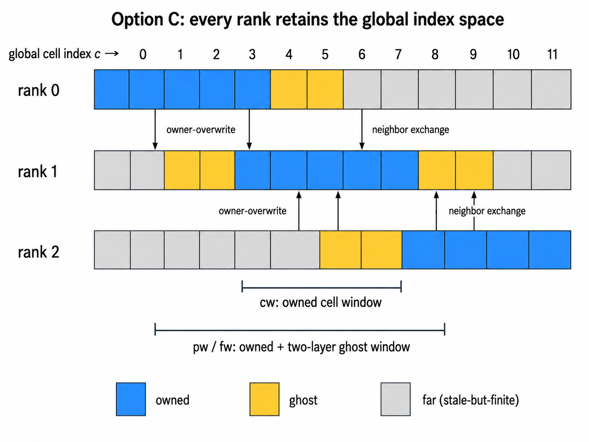

MPI decomposition reference
TENRYU uses one MPI rank per GPU and the design's “Option C” layout — every rank retains global-size arrays but updates only its owned windows (the rejected alternatives compacted arrays to remapped local indices). Ghost exchanges couple partition boundaries, and explicit kernel ranges make one-rank execution the full-range special case.
Why this decomposition
The constraints are one MPI rank per GPU, deterministic physics kernels, and kernels already expressed over explicit index ranges. “Option C” — the name the decomposition design gave this layout when it was chosen over compacted local-index alternatives — makes every rank hold global-size arrays but own only a window. It trades memory for simplicity and safety: there is no local-index remapping to get wrong, one-rank execution is the same code with a full-range window, and an operator is ported to MPI by narrowing the range over which its kernels may act.
Stencil physics still needs neighboring state. Two ghost layers cover every stencil in the audited set: the 1D checkerboard PQ filter reads \(\rho\) and active state at \(i\pm2\), and the electron odd-even flux reaches from \(j-2\) through \(j+1\). Shared planes use owner-overwrite semantics, so authority is unambiguous: a ghost is a copy of the owner's value and is never merged with it.
Reproducibility and scope are explicit. Owned partials normally combine with MPI_Allreduce(SUM), so bitwise identity is not promised across different rank counts; for a fixed rank count, deterministic kernels remain deterministic. Features not audited for MPI fail cleanly during validation instead of running incorrectly. Far cells are stale-but-finite by design, but physics must never read them, making each launch window a checkable correctness contract.
cw,nw,pw,fw: these are launch-range roles, not array copies — short names that appear in the source code only, never in namelists or output files. The table below defines their owned-cell, owned-node, and owned-plus-ghost uses.- Two ghost layers: the \(i\pm2\) checkerboard PQ filter and \(j-2\ldots j+1\) electron odd-even flux set the width; audited one-layer stencils fit inside it.
- Shared i-planes: neighboring ranks may compute the same node, but owner-overwrite supplies the single authoritative bit pattern.
- 2D layout: with flat index \(c=i\,n_z+j\), an r-slab is a contiguous span of the global array.
Owned-window decomposition
For 1D_SPH, the global cell line is split statically into contiguous radial slabs. The 2D_RZ v1 implementation uses r-slabs, contiguous in the flat cell index \(c=i\,n_z+j\). Arrays are not remapped to compressed local indices. Every rank allocates them globally, but only the owner updates physical state.
The short window names seen in the implementation describe launch-range roles, not separate array copies:
| Window | Extent and use |
|---|---|
cw | State::owned_cell_window(n): owned-cell updates and local partial reductions. |
nw | State::owned_node_window(n): owned-node updates. Owner-overwrite establishes the authoritative value on shared i-planes. |
pw | A call-site name for an owned-plus-ghost cell window used by stencil producers and intermediate fields. |
fw | State::owned_cell_window_ghost(n, stride): the owned-plus-ghost range for force/scatter passes and ghost-derived fields. |

Ghost and halo exchange
The canonical v1 width is n_ghost=2. The 1D checkerboard PQ filter (the odd–even filter on the total pressure \(P+Q\)) and electron odd-even flux reach \(i\pm2\); this also covers the one layer required by the Kershaw nine-point conduction stencil (see Electron & ion conduction), the hydro corner-force scatter (see Lagrangian hydrodynamics), and the Winslow rezoning iterations (see ALE). Ghosts occupy natural global-index positions and match the owner's bits after exchange.
Far entries beyond owned plus ghost may be stale, but must remain finite and cannot influence owned results, decisions, or diagnostics. Reductions are therefore masked to the owned window.
Exchange occurs after an owned write and before the first ghost consumer. Hydro entry exchanges thermodynamic cell fields; predictor/corrector position commits are followed by node position and velocity exchange. Face and corner transfers fill 2D diagonal neighbors. GPU-aware MPI performs device pack, MPI_Isend/MPI_Irecv, MPI_Waitall, and device unpack; otherwise host staging is used.
Windowed kernel signatures
Update kernels receive (begin, end) and form absolute_index = begin + tid. Global boundary predicates retain their serial meaning. Cell and node updates use cw and nw; stencil or interface-scatter passes expand to pw/fw only when required.
The 2D hydro corner-force scatter runs over fw, giving each shared node both adjacent cell contributions without a separate force exchange. Distributed FLD-2D CG uses owned-row SpMV (sparse matrix–vector products) and owned-window dots, exchanging its search direction each iteration. On one rank all four windows collapse to [0,n), preserving the defined full-range identity.
Reductions and reproducibility
Global energies, timesteps, and solver dots combine owned-window partials with standard MPI_Allreduce. Generic MPI_Allreduce(SUM) does not guarantee bitwise identity across rank counts: MPI-dependent association can move least-significant bits. The reproducibility contract (the repository's docs/NUMERICS.md §12) classes these reductions as statistically rather than bitwise reproducible across rank counts; the former Gather plus root sequential sum is retired.
Quantities requiring rank-invariant bits use only source-defined canonical paths. The laser conservation rescale coefficient, for example, is summed in canonical order on rank 0 and distributed with an exact-zero Allreduce. A fixed cooperative-grid reduction tree is deterministic only for a fixed grid size. These exceptions do not make MPI execution generally bitwise across rank counts.
MPI v1 scope and deferral guards
MPI v1 treats an unsupported feature with n_ranks>1 as fail-loud: validation or the driver returns a clean error rather than running or silently falling back. Listed deferrals include SNB, CBET, hot-electron transport, Braginskii viscosity, and per-material conservation.
midpoint_v1 is code-enforced as well. With two or more ranks, the driver rejects Numerics.hydro.time_integration="midpoint_v1" — the 2D default — and states that its internals are not rank-decomposed. A multi-rank 2D deck must therefore set time_integration="pc_v0" explicitly; there is no silent fallback.
One step under MPI
Launch owned work. Each operator updates only its owned cell or node range through
cwornw, and forms reductions from owned entries only.Extend stencil producers. Passes that must construct neighbor-visible intermediate state expand deliberately to
pworfw; far entries remain outside the contract.Refresh halos. After an owner writes and before the first ghost consumer, fields are packed on the device, transferred with nonblocking sends and receives, waited, and unpacked into the two ghost layers. In 2D, face exchange completes before corner and mixed physical/parallel corner values are filled; host staging is used only when GPU-aware MPI is unavailable.
Combine global quantities. Owned partial energies, timestep limits, and solver dots are combined with the appropriate
MPI_Allreduce, normallySUMfor additive quantities.Synchronize LaserMesh. In 1D, owned radial profiles are assembled with
MPI_Allgathervbefore tracing and only local HydroMesh cells receive the result. In 2D, owned HydroMesh contributions are projected and summed into a replicated LaserMesh withMPI_Allreduce(SUM); each rank traces the same field and scatters deposition only to its owned cells.Gate the scope. Validation or the driver rejects any enabled feature whose kernels, exchanges, or collective ordering have not been audited for multiple ranks.
Build and launch notes
| Item | Setting | Meaning |
|---|---|---|
| MPI build | cmake -S . -B build -DTENRYU_ENABLE_MPI=ON | Enables MPI support with the canonical CMake feature flag. |
| Launch | mpirun -n N ./build/tenryu run <deck.py> | Starts N ranks. The base placement model is one rank per GPU. |
| Deferral guard | unsupported feature + n_ranks>1 | Validation or the driver stops explicitly; there is no silent fallback or unaudited execution. |
Verification
- Rank comparisons use P=1 as reference and assign each deck a T-bit, T-sum, or T-noise tier. T-bit is bitwise; T-sum normally gates normalized Allreduce-order differences at \(10^{-8}\); T-noise uses a self-calibrated 2D
atomicAddband. parallel_halo_exchange_np2andparallel_halo_exchange_np4check cell/node owner-overwrite and corner ghosts, requiring machine-exact agreement with the analytic values and at shared nodes.ctest --test-dir build -L mpi_gate --output-on-failureruns the current ten-case MPI battery, covering 1D FLD/SN, GXII, 1D/2D burn, 2D SN/FLD, and LaserMesh. Each case compares P>1 owned dumps with P=1 under its configured bit, band, or envelope tier (envelope: a wider per-deck worst-case bound calibrated from reference-run ensembles — see the Verification page's reproducibility legend).